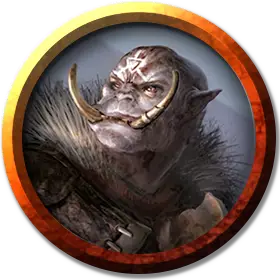

Орк клинок Илневала
Orc Blade of Ilneval
Средний Гуманоид (Орк), хаотично-злой

Класс Доспеха 18 (кольчуга, щит)
Хиты 60 (8к8 + 24)
Скорость 30 футов
| мод | спас | ||
|---|---|---|---|
| СИЛ | 17 | +3 | +3 |
| ЛОВ | 11 | +0 | +0 |
| ТЕЛ | 17 | +3 | +3 |
| мод | спас | ||
|---|---|---|---|
| ИНТ | 10 | +0 | +0 |
| МДР | 12 | +1 | +3 |
| ХАР | 14 | +2 | +2 |
Навыки Восприятие +3, Запугивание +4, Проницательность +3
Чувства тёмное зрение 60 футов, пассивное Восприятие 13
Языки Общий, Орочий
Опасность 4 (1100 опыта)
Бонус мастерства +2
Среда обитания Горы, Лес, Луг, Подземье, Холмы
Особенности
Агрессия. Бонусным действием орк может переместиться на расстояние до половины своей скорости к враждебному существу, которое может видеть.
Каратель врагов Илневала. . Орк наносит дополнительную кость урона, если попадает атакой длинным мечом (включено в атаку).
Действия
Мультиатака. Орк совершает две рукопашные атаки своим длинным мечом или две дальнобойные атаки своими метательными копьями. Если Приказ Илневала доступен для использования, то орк может сделать это после этих атак.
Длинный меч. . Рукопашная атака оружием: +5 к попаданию, досягаемость 5 футов, одна цель. Попадание: 12 (2к8 + 3) рубящего урона, или 14 (2к10 + 3) рубящего урона при использовании двумя руками.
Метательное копьё. . Рукопашная или Дальнобойная атака оружием: +5 к попаданию, досягаемость 5 футов или дистанция 30/120 футов, одна цель. Попадание: 6 (1к6 + 3) колющего урона.
Приказ Илневала (Перезарядка 4–6). . До трех союзных орков не далее 120 футов от этого орка, которые могут его слышать, могут использовать свои реакции, чтобы совершить одну атаку оружием.
Описание
Ильневал – это боевой капитан Груумша, коварный стратег, который смело направляет солдат Груумша. Среди орков те воины, что чтят Ильневала, подражают своему божеству. Такие орки учатся командовать своими товарищами так, чтобы это было неожиданно, но помогало обеспечить победу. Самые мудрые среди таких лидеров получают благословение Ильневала и становятся клинками, экспертами тактики, которые советуют своему вождю в случае войны.
Клинки командуют на фронте, бесстрашно бросаясь в бой, и кричат приказы младшим солдатам. Клинок знает, как использовать свирепость орков на пользу делу, и помогает обычным оркам сообща сражаться с противниками.
См. дополнительно статью: "Бестиарий: Орки"